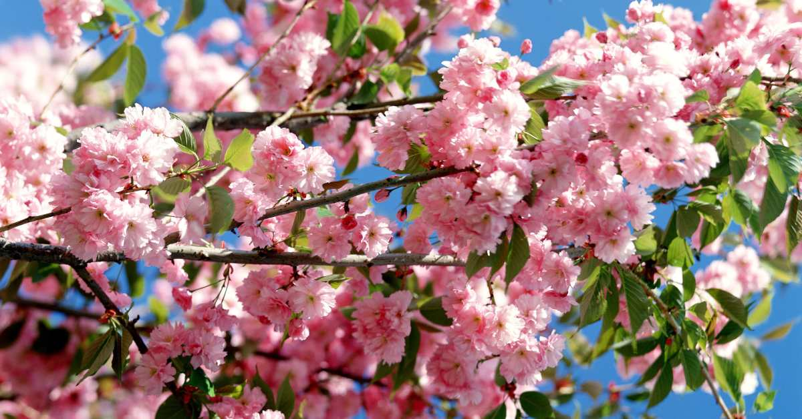
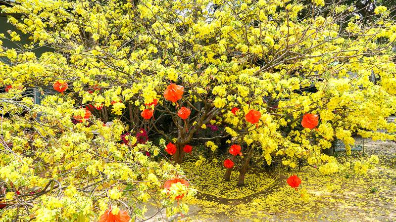
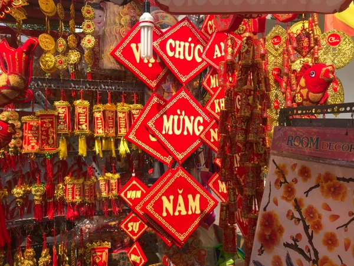

🏡 Dọn Dẹp và Trang Trí Nhà Cửa Ngày Tết
Lau Dọn Cuối Năm
Dọn dẹp nhà cửa cuối năm là một trong những phong tục quan trọng nhất trước Tết.
Việc này không chỉ để nhà cửa sạch sẽ, gọn gàng mà còn mang ý nghĩa tâm linh sâu sắc.
Ý Nghĩa Của Việc Dọn Dẹp
- Xua đuổi xui xẻo: Dọn sạch những điều không may mắn của năm cũ
- Đón may mắn mới: Tạo không gian sạch sẽ để đón những điều tốt đẹp trong năm mới
- Thể hiện sự tôn trọng: Dọn dẹp để tổ tiên và các vị thần về ăn Tết
- Tạo không khí Tết: Nhà cửa sạch sẽ, gọn gàng tạo cảm giác tươi mới, vui vẻ
Thời Điểm Dọn Dẹp
Thường bắt đầu từ ngày 20 tháng Chạp trở đi, và hoàn thành trước ngày 30 Tết.
Nhiều gia đình chọn ngày tốt để bắt đầu dọn dẹp, tránh những ngày xấu theo lịch âm.
Những Việc Cần Làm Khi Dọn Dẹp
- Dọn dẹp tổng thể:
- Quét dọn, lau chùi toàn bộ nhà cửa
- Sắp xếp lại đồ đạc, vứt bỏ những thứ không cần thiết
- Giặt giũ rèm cửa, chăn màn, gối đệm
- Lau dọn bàn thờ:
- Lau chùi bàn thờ tổ tiên sạch sẽ
- Thay hoa, nến, hương mới
- Sắp xếp lại di ảnh, lư hương
- Dọn dẹp bếp:
- Vệ sinh bếp núc, tủ bếp
- Chuẩn bị không gian để nấu nướng ngày Tết
- Dọn dẹp sân vườn:
- Quét sân, cắt tỉa cây cối
- Dọn dẹp cỏ dại, rác thải
Trang Trí Hoa Mai, Hoa Đào
🌸 Hoa Đào (Miền Bắc):
Hoa đào là biểu tượng không thể thiếu của Tết miền Bắc. Màu hồng rực rỡ của hoa đào
tượng trưng cho sự may mắn, thịnh vượng và sức sống mới.
- Ý nghĩa: Xua đuổi tà ma, mang lại may mắn, tài lộc
- Cách chọn: Chọn cây có nhiều nụ, hoa nở đều, cành đẹp
- Vị trí đặt: Phòng khách, trước cửa nhà, bàn thờ
- Chăm sóc: Tưới nước đều, tránh nắng gắt, giữ ẩm cho gốc
🌺 Hoa Mai (Miền Nam):
Hoa mai vàng là đặc trưng của Tết miền Nam. Màu vàng rực rỡ tượng trưng cho sự giàu sang,
phú quý và may mắn trong năm mới.
- Ý nghĩa: Tài lộc, thịnh vượng, may mắn
- Các loại mai: Mai vàng, mai trắng, mai đỏ
- Vị trí đặt: Sân trước, phòng khách, ban công
- Chăm sóc: Đặt nơi có ánh sáng, tưới nước vừa phải
Câu Đối Đỏ
Câu đối đỏ là một phần không thể thiếu trong trang trí Tết. Những câu đối được viết trên giấy đỏ
hoặc in sẵn, treo ở cửa ra vào, cột nhà, hoặc dán trên tường.
Ý Nghĩa Câu Đối Đỏ
- Màu đỏ: Tượng trưng cho may mắn, thịnh vượng, xua đuổi tà ma
- Nội dung: Thường là những lời chúc tốt đẹp, cầu mong may mắn, tài lộc
- Văn hóa: Thể hiện tinh thần văn hóa, học vấn của gia đình
Các Loại Câu Đối Phổ Biến
- Câu đối cửa: "Tân niên đại cát", "Xuân đáo phúc lai"
- Câu đối phòng khách: "Phúc như Đông Hải", "Thọ tỷ Nam Sơn"
- Câu đối bàn thờ: "Tổ tiên công đức thiên niên thịnh", "Tử tôn hiếu thảo vạn đại vinh"
Các Vật Trang Trí Khác
1. Tranh Tết
- Tranh Đông Hồ, tranh dân gian
- Tranh chúc Tết với hình ảnh trẻ em, hoa quả
- Tranh thư pháp với các chữ may mắn
2. Đèn Lồng, Đèn Kéo Quân
- Đèn lồng đỏ treo trước cửa
- Đèn kéo quân tạo không khí vui tươi
- Đèn LED trang trí hiện đại
3. Cây Quất, Cây Đào Giả
- Cây quất với quả vàng tượng trưng cho tài lộc
- Cây đào giả trang trí cho những nơi không có điều kiện trồng đào thật
4. Bàn Thờ Gia Tiên
- Lau chùi, sắp xếp lại bàn thờ
- Đặt hoa tươi, trái cây, bánh kẹo
- Thắp hương, đèn dầu
- Treo câu đối, hoành phi

🌸 Hoa Đào
Hoa đào miền Bắc

🌺 Hoa Mai
Hoa mai vàng miền Nam

🏮 Câu Đối
Câu đối đỏ ngày Tết
Lưu Ý Khi Trang Trí
- Chọn màu sắc hài hòa, không quá rối mắt
- Đảm bảo an toàn khi treo đèn, câu đối
- Giữ gìn vệ sinh, không để hoa héo, rụng làm bẩn nhà
- Trang trí vừa phải, tạo không khí ấm cúng nhưng không quá cầu kỳ
Ý Nghĩa Tổng Thể
Việc dọn dẹp và trang trí nhà cửa ngày Tết không chỉ làm đẹp không gian sống mà còn:
- Tạo không khí Tết rộn ràng, vui tươi
- Thể hiện sự tôn trọng với tổ tiên và truyền thống
- Gắn kết gia đình qua hoạt động chung
- Mang lại cảm giác khởi đầu mới, tích cực
- Giáo dục con cháu về văn hóa truyền thống